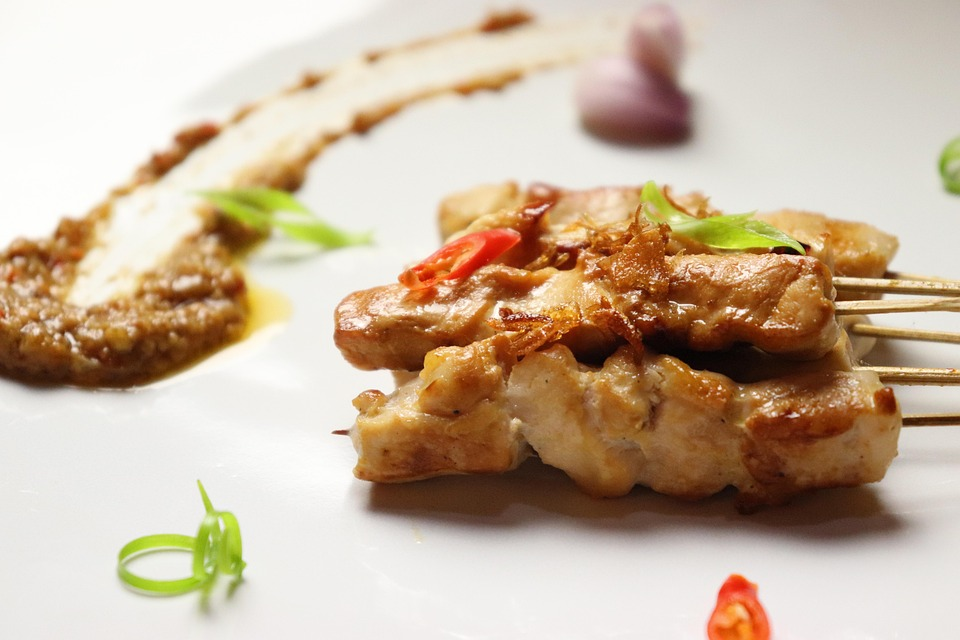

Sate Ayam Recipe

Description
Sate Ayam is a beloved Indonesian street food made of grilled chicken skewers marinated in sweet and savory spices, served with rich peanut sauce and a drizzle of soy sauce.
Ingredients
Chicken Marinade:
- 500 g boneless chicken thighs or breasts, cut into cubes
- 2 cloves garlic, minced
- 1 tbsp soy sauce
- 2 tbsp sweet soy sauce (kecap manis)
- 1 tbsp vegetable oil
- ½ tsp coriander powder
- ½ tsp salt
- ¼ tsp pepper
Peanut Sauce:
- 150 g roasted peanuts, ground or blended
- 2 cloves garlic, minced
- 2 red chilies, sliced (optional)
- 2 tbsp sweet soy sauce (kecap manis)
- 200 ml water
- ½ tsp salt
- 1 tbsp lime juice
Serving:
- Rice cakes (lontong) or steamed rice
- Fried shallots for garnish
- Soy sauce and sliced chilies (optional)
Steps
- Mix all marinade ingredients in a bowl and add chicken cubes
- Marinate for at least 30 minutes or up to 2 hours
- Thread chicken onto bamboo skewers
- Grill over charcoal or pan until cooked and slightly charred
- For peanut sauce, sauté garlic and chili until fragrant
- Add ground peanuts, soy sauce, water, salt, and lime juice
- Cook until thick and smooth, stirring occasionally
- Serve satay with peanut sauce and rice cakes, topped with fried shallots
Home